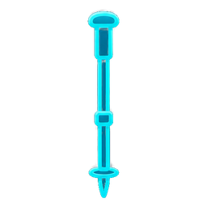
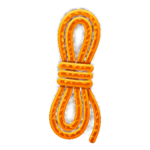
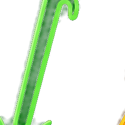
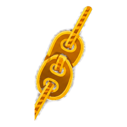
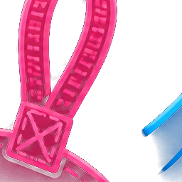
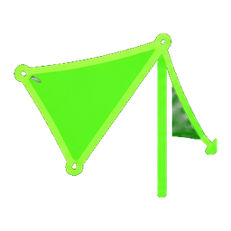
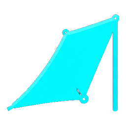
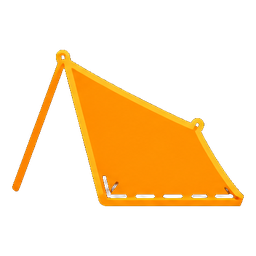

戶外技能課程 · 教師研討會教學用
外帳（天幕）搭設教學
一片外帳，四種搭法：包覆式外帳 · A 字帳 · 斜邊帳 · L 型帳
適合完全新手 · 左側可隨時拉開「提問牆」發問 🙋
先看懂：外帳是什麼、能做什麼
外帳（天幕）就是一片四邊有綁繩點的防水布。搭配營柱、登山杖、營繩與營釘，就能變出遮風、避雨、遮陽的各種遮蔽所。
1包覆式外帳封閉包覆、擋風保暖，適合強風與緊急避難
認識裝備與名詞
搭帳前先認得這幾樣，後面的步驟才聽得懂。

營柱 / 登山杖
撐起帳身高度的支柱。沒有專用營柱時，登山杖就能替代。

營繩
把帳角、柱頂拉向地面固定的繩子。決定帳型穩不穩。

營釘
插入地面固定營繩與帳角的釘子。營釘要斜插，抓地才牢。

調節繩結（營繩結）
營繩上打的可滑動繩結，用來收緊或放鬆營繩。

綁點（掛環）
外帳邊緣與角落的繩圈，是綁營繩、下營釘的位置。
屋脊（脊線）
帳身最高的中央線，要拉「直挺」帳型才漂亮又抗風。
搭設前必懂：5 個通用原則
任何帳型都適用，先抓大原則、再談步驟。
1
判斷風向
開口處避免朝向迎風面；先看樹梢、雲的方向或用指北針判斷。
2
避開危險地形
遠離落石區、崩塌地、枯立木與低窪積水處。
3
注意排水
選地面能排水、或有排水路線的位置，雨天才不積水。
4
顧及舒適度
營地要平整、傾斜度小，睡得穩、帳也搭得穩。
5
搭設技巧
營柱要直立、營繩拉力適中，四周力量均衡對抗。
1
包覆式外帳
封閉式單人避難帳
用一片外帳把自己「包」起來，只用一支登山杖就能成型。
帳身封閉、前高後低，抗風、保暖。
最適合：強風稜線、低溫、緊急避難過夜。
包覆式外帳｜五個固定點
新手提示 五固定點與順序：B① 為第1、D② 為第2（上緣四分之一處）；N③、H④ 往內為第3、第4；中央登山杖⑤。
包覆式外帳｜步驟 1
新手提示 B 點為第1固定點、D 掛點為第2固定點：上緣左右各約四分之一處先下釘。
包覆式外帳｜步驟 2
新手提示 將 N 與 H 掛點的四分之一處往下折，整理後暫時固定。
包覆式外帳｜步驟 3
新手提示 準備兩頭打結、約 160–165 cm 的營繩平鋪地面，量出並固定第3(N)、第4(H)點。
包覆式外帳｜步驟 4
新手提示 登山杖調 120–125 cm 穿入撐起，上方用繩綁緊防鬆脫，再往外拉繩下釘。
包覆式外帳｜步驟 5 完成：內部整理
整理重點：① 多餘布料「由外往內」塞並封起 ② 登山杖垂直、上方用繩綁緊 ③ 後緣貼地封閉、擋風面朝迎風處 ④ 第 3、4 點營釘再加強、營繩收緊
包覆式外帳｜出入口：掀開式
把前緣一側掀起固定，形成有遮雨的前庭。
1
掀開式出入口
把前緣一側往上掀起、用登山杖或營繩固定，開口變大、進出方便，也能通風。
2
下雨天也好用
掀起的前緣形成一塊「前庭」遮雨棚。下雨時可在前庭內炊煮，人和裝備都不淋雨。
3
收合就恢復封閉
不需要時把前緣放下、下釘固定，帳身立刻回到封閉狀態，繼續擋風保暖。
中間高、兩邊低，像屋頂或字母 A —— 搭設最快、最通用
搭設步驟
- 攤平外帳，先把中央屋脊撐高（兩支主柱或一支登山杖）。
- 拉出兩端屋簷、固定四個角落。
- 拉側邊營繩、逐一張緊。
- 確認主柱垂直、屋脊直挺，收緊完成。
最適合情境
一般過夜、遮陽遮雨的萬用基本款；場地平坦、風不特別大時最好用。
A 字帳的三種實用變化
同一個 A 字，微調就能因應不同天氣與地形。

善用樹幹
營地附近有樹時，用樹幹加輔助繩、引繩取代營柱撐起屋脊，四角再下營釘固定。

單側降低擋風
把風大那一側改低，外帳的邊角綁點直接用營釘固定到地面，單側擋風。

降柱封單側
將其中一邊的主柱移除、降低並固定在地面，只留單一側開放出入口，包覆性更強、更擋風。
原則 風越大，帳身越低、開口越小；晴天求通風，就搭高、開口大。
一邊高、一邊斜下觸地 —— 擋單向風雨，包覆性佳
搭設步驟
- 一側用營柱、登山杖或樹幹撐高。
- 另一側把布斜拉下來、貼地下營釘。
- 高側後方拉一條營繩往後固定。
- 把迎風面朝向斜邊，擋風效果最好。
最適合情境
午後雷陣雨或單一方向強風時當擋風擋雨牆；單斜面包覆性佳，也適合休憩過夜。
一面擋風、上方有屋頂 —— 擋單側風，可當客廳
搭設步驟
- 中間用兩支登山杖把屋頂屋脊撐起來。
- 迎風側把布往下拉低、形成一面立牆。
- 另一側使用登山杖做出屋簷。
- 四周營繩下營釘、逐一收緊定型。
最適合情境
營地風偏一個方向、或需要擋西曬時；適合當炊事、休息的半開放空間。
📊 四種搭法快速比較
數值越高代表該項越強（滿分 5）。點下方圖例可切換顯示某一帳型。
🗳️ 情境：強風稜線、低溫、緊急避難過夜，你會選哪一種？LIVE
已投票：0 人（可重複點改票）
安全提醒與收納
1
判斷風向
開口避免朝向迎風面；先觀察樹梢、雲的方向或用指北針判斷。
2
避開危險地形
遠離落石區、崩塌地、枯立木與低窪積水處再紮營。
3
顧好排水與舒適
選能排水、有排水路線的位置；地面要平整、傾斜度小。
4
營柱直立、力量均衡
營柱要直立、營繩拉力適中，四周力量均衡對抗，帳型才穩。
5
營繩要顯眼、別絆倒
營繩位置提醒同行者，夜間可掛小燈或反光片。
6
收納要乾燥、清點裝備
抖掉水氣泥沙、回家陰乾防霉；清點營釘、營繩與調節繩結。
動手練習吧！
先在平地把四種搭法各搭一次，熟悉綁點與營繩；
再挑戰有風、有坡的場地。搭得多，收得快，山上就不怕。
1包覆式：抗風避難
2A 字：萬用基本
3斜邊：單向擋風雨
4L 型：擋風客廳
做彼此的山林夥伴｜安全的山旅，從搭好一頂外帳開始